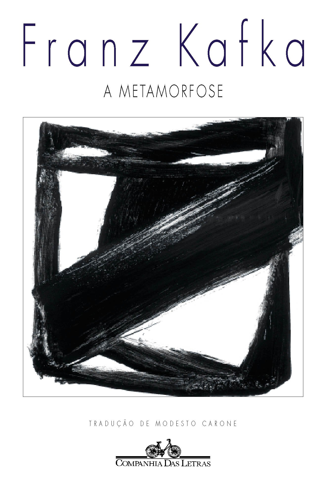
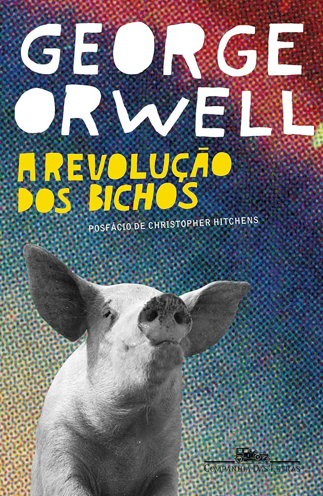

Dom Casmurro
Machado de Assis
Cantinho Privado
Reunimos livros de vários gêneros em um só lugar. Procure pelo título ou autor, leia um resumo e salve os que mais gostar.

SOBRE O PROJETO
Este site foi criado para um trabalho escolar sobre uma biblioteca digital. O catálogo reúne títulos de diferentes gêneros e permite buscar por nome do livro ou autor.
Na biblioteca, você também pode ver os resumos, marcar favoritos e adicionar outros livros ao acervo.
CONHEÇA O ACERVO
Machado de Assis

Jorge Amado

Graciliano Ramos
UM ESPAÇO FEITO PARA QUEM GOSTA DE LER
Este é o nosso cantinho de leitura: escolha um livro, conheça um pouco da história e guarde seus preferidos.
Ver os livrosESCOLHA UM LIVRO
0 livros no acervo
Quantos livros começam com essa letra?
Nenhum título encontrado. Tente outra palavra-chave.
SUA SELEÇÃO
Ainda não há favoritos. Abra o painel de um livro e marque-o com o coração.
UM PROJETO DA BIBLIOTECA DIGITAL
A gente reuniu alguns livros para facilitar a escolha da próxima leitura. Dá para pesquisar, filtrar por gênero, favoritar e até acrescentar um título novo.

